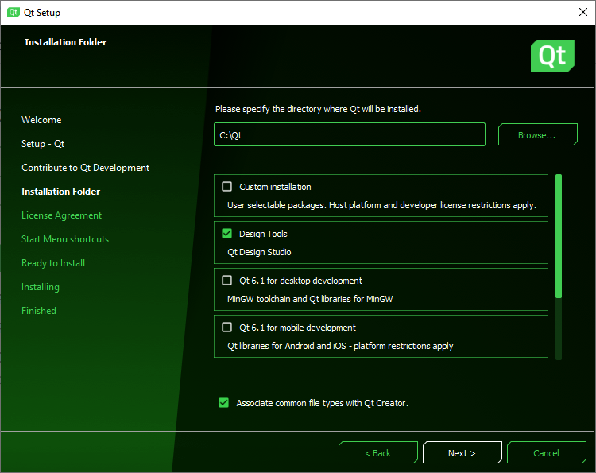

Installation
You can install Qt Design Studio either using a stand-alone installation package or Qt Online Installer. The installers copy all the modules and tools you need to design UIs and preview them on the desktop to your computer and configure them for you. Qt Design Studio is available for Linux, macOS, and Windows operating systems. For more information, see Supported Platforms.
To begin, create a Qt Account. This account gives you access to a web portal to manage your licenses and download the standalone Qt Design Studio package or Qt Online Installer. Alternatively, you can download an evaluation package here.
After the installation, you can start exploring Qt Design Studio by following tutorials, opening examples, watching videos, and reading this manual.
Stand-Alone Installation
You can download the Qt Design Studio installer for your operating system (macOS, Linux, or Windows) from your Qt Account. Start the installation as you would for any other software, and follow the instructions of the installer to complete it.
Using Qt Online Installer
You can download Qt Online Installer for your operating system from your Qt Account.
- Start Qt Online Installer.
- Select Design Tools.

- Select Next and follow the instructions of the installer to complete the installation.
For more information about the installation process, see Getting Started with Qt.